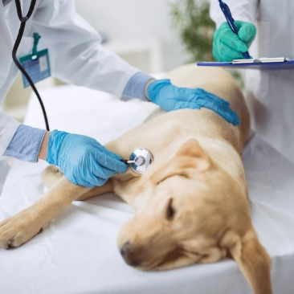
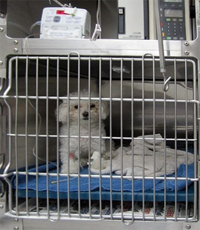

CONSULTA MEDICA

Ofrece áreas de consultas médicas de atención 24 horas los 7 días de la semana, con un equipo de médicos veterinarios especializados y con una vasta experiencia, para poder diagnosticar y realizar el tratamiento más adecuado para el bienestar de nuestros mejores amigos.
EMERGENCIA
Contamos con las instalaciones, equipamiento y el equipo de médicos veterinarios preparados, para actuar ante cualquier emergencia o urgencia médica, garantizando una atención oportuna y eficaz al servicio de nuestros amigos.
HOSPITALIZACIÓN
Servicios destinados al internamiento de pacientes para su diagnóstico, recuperación y/o tratamiento. Muchos de nuestros pacientes deben de tener un control médico permanente por uno o varios días dependiendo de su estado clínico, el servicio de internado de Vet Care Center garantiza la monitorización del paciente las 24 horas del día por médicos veterinarios, los cuales realizan los cuidados y procedimientos médicos constantes para que nuestros amigos regresen a casa lo más pronto posible.